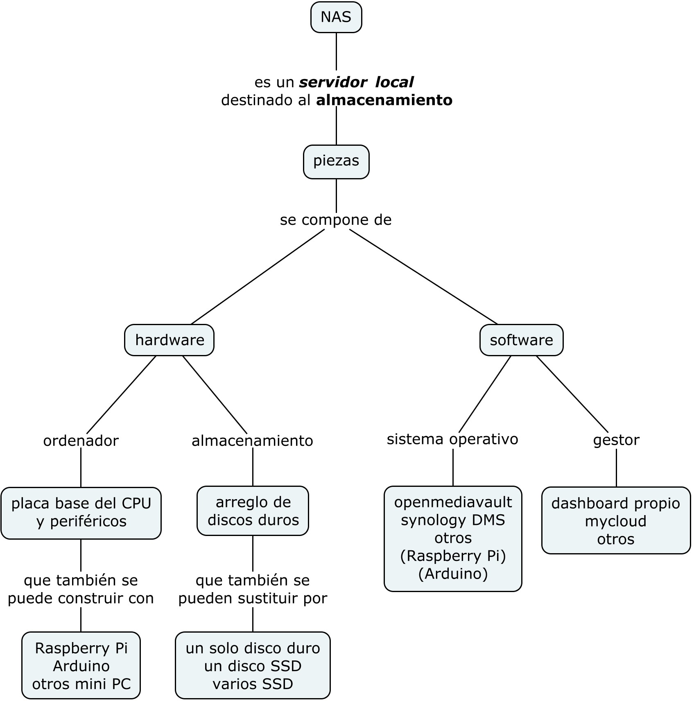
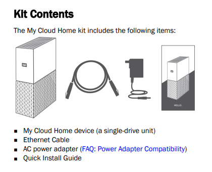

Almacenamiento Externo de Datos. Temario ampliado.
Temario adicional
Sección 5. Almacenamiento externo.
Apartado 5.2. NAS (network area storage).
Ciclo formativo: CFGM de Sistemas Microinformáticos y Redes Semipresencial
Módulo: Seguridad Informática
Curso académico: 2023/2024
Actividad presencial - hacer uso de un NAS
Esquema básico de un NAS

NAS de altas prestaciones
Diseño Propio desde cero
Son servidores que podemos configurar para tener acceso a diferentes aplicaciones, además de contar con el servicio de almacenamiento.
- elegir un ordenador adecuado a nuestras necesidades de alto nivel de trabajo
- elegir arreglos de discos redundantes tipo RAID
- elegir el Sistema Operativo (SO) que ofrezca las aplicaciones que necesitamos ejecutar
- dominar en profundidad el referido SO y tener todos los conocimientos para instalar las aplicaciones
- configurar los volúmenes de almacenamiento y el acceso de los usuarios
Diseño soportado por SO especializado
Son ordenadores que podemos construir para luego configurarlos con el soporte de Sistemas Operativos especialmente diseñados para servidores NAS
- elegimos las características del hardware y los discos de manera similar al diseño propio desde cero
- instalamos y configuramos el software con base a SO existentes para estos servidores. Por ejemplo, openmediavault.
- elegimos y activamos las aplicaciones con las que queremos contar
- configurar los volúmenes de almacenamiento y el acceso de los usuarios
NAS de diseño personalizado
Son servidores adaptados al tamaño de nuestro proyecto y que podemos controlar totalmente
- adquirir minis PC en el mercado o tarjetas microcontroladoras como la Raspberry Pi.
- instalamos y configuramos el software con base a SO existentes o especialmente creados para esos minis PC o microcontroladoras.
- configurar los volúmenes de almacenamiento y el acceso de los usuarios
NAS de adquisición comercial
Son servidores de venta comercial que abarcan un amplio abanico de soluciones. Ejemplo, las soluciones de Synology o de WesternDigital.
- elegir capacidad de almacenamiento, comodidad de configuración y facilidades del SO y el gestor de almacenamiento (por ejemplo, myCloud)
- configurar las carpetas de almacenamiento y el acceso de los usuarios
En nuestro caso, trabajaremos con el modelo comercial de WD siguiente:

(a la venta en MediaMarkt, por ejemplo)
Obra publicada con Licencia Creative Commons Reconocimiento 4.0